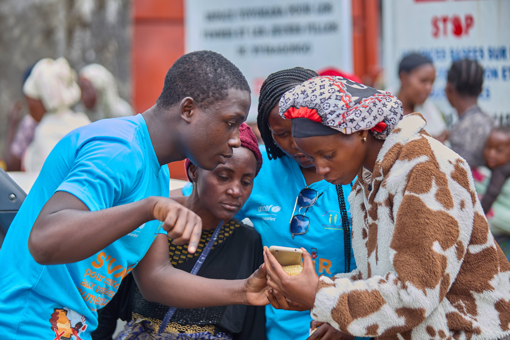

un programme nous permettant d'
Offrir aux jeunes des compétences pratiques et actualisées pour les sortir de la précarité,
leur permettant ainsi de
devenir les propres acteurs du changement et de se mettre activement au service de leur communauté. »
« Au sein de Team Exchange, nous unissons nos forces pour mettre à jour nos compétences et
faire face ensemble aux crises. Plus qu'une équipe, nous formons une synergie de jeunes leaders outillés,
prêts à initier des actions concrètes et à devenir les véritables auteurs du changement
pour le bien-être de notre communauté. »
voulant metre au service de la communuates nos equipe se disponibilise
pour accompagner les communauté dans le reslience et leurs accompagnetr à
à comprendre les enjeux durant les periode en vue d

Nous somme un mouvement des jeunes creer dans le soucis d'offirir à la jeunesse
un espace d'expresion envue quelle decouvre et propose des solution au problemes
de leur communauté .
Tout en etant les premier auteurs du changement ,
Affecté par la situation précaire que la jeunesse connait actuellement ;
Soucieux des talents des jeunes et enfants non-exploités, des groupes des jeunes isolés,
marginalisés ou délaissés, des avancés de la nouvelle technologie et des techniques de l’innovation
dont les jeunes sont devenus des inadaptés (l’Etat congolais devrait aider les jeunes à y
prendre connaissance).
Ayant pris conscience de cette situation afin d’en dégager des pistes des solutions adéquates.
Il à donc été d'une grande utilité de fonder (à l’aide des trois piliers du système éducatif de Don Bosco)
un cadre organisationnel (Bosco-Exchange Asbl) pouvant travailler à promouvoir
et à aider les jeunes à prendre conscience de leurs talents, à promouvoir la nouvelle technologie,
à former un incubateur entre eux et proposer des solutions techniques et durables aux problèmes
de la société.:
De promouvoir les technologies avancées en vue d’en faire profiter aux jeunes les plus défavorisés où qu’ils soient et d’où qu’ils viennent ; proposer des solutions aux problèmes techniques et technologiques de la société ainsi qu’initier les recherches techniques et scientifiques, dans le respect de Dieu.
. Créer un incubateur avec les groupes et mouvements des jeunes délaissés pour les accompagner ; les aider dans leurs différents projets culturels, techniques, technologiques etc.
avec affection et profonde devouement s'inspirant de la vie de jean bosco nous mettons en oeuvres des avtivites permettant aux jeunes de deploiyer leurs potentiels et de mettre au service dela communaute les ponteitels decouvrit et develloper durant les activites avec bosco exchange .
il sufit que vous soyez jeune pour que je vous aimiez
motivation